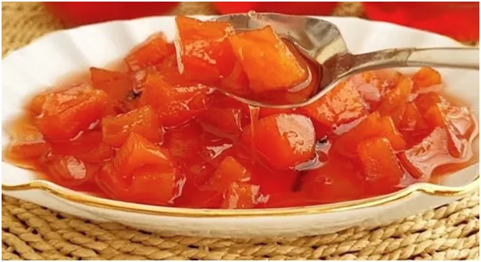
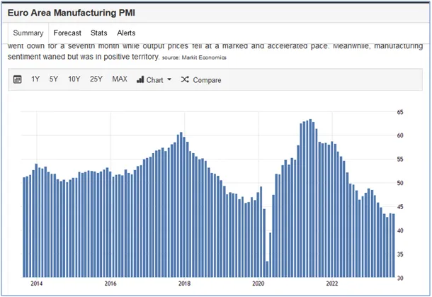
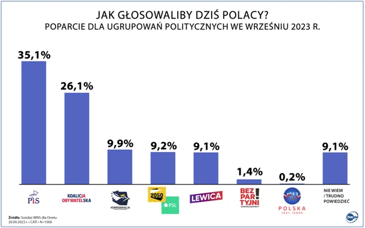

Zapraszam polityków PiS na drogie szkolenia.
Okres przedwyborczy to najmniej zdrowy czas w życiu Polaków. Ilość toczonej żółci zatruwa organizmy a skoki ciśnienia tętniczego odbierają nie tylko dobry nastrój, ale i rozum. Niewielu z nas potrafi wyłączyć się całkiem i zająć np. robieniem konfitur. Polecam! Pigwę z antonówkami podlałem syropem z winogron, by konfitura nie była za kwaśna. Szczypta cynamonu i smakuje genialnie!

Tymczasem...
Nauka języków wymaga stałego z nimi kontaktu, to też po konfiturowej uczcie zajrzałem na strony państwowej, tureckiej agencji prasowej a tam znienawidzony przez 35% a kochany przez 26% innych Polaków Przewodniczący Rady Europejskiej Charles Michel. Ten bardzo ważny polityk w imieniu Europy mówi okropne rzeczy! Mówi na międzynarodowym forum, że "system ONZ jest sklerotyczny i utykający",. To jakiś wirus musi być, bo w podobnym tonie to samo mówili dziś: prezydent Kenii, wiceprezydent Chin i prezydent Serbii, a dowódca armii Sudanu zwraca się do ONZ o uznanie Sił Szybkiego Wsparcia w walce z terrorystami u siebie w kraju. Tajemnicą Poliszynela jest, że ONZ to zdominowana przez USA organizacja próbująca tworzyć prawo międzynarodowe korzystne dla USA.

Widać UE traci cierpliwość i artykułuje z USA w oficjalny spór. Przez dekady w oficjalnej narracji "solidarność atlantycka" była niezachwiana, ale właśnie pokazały się po wakacjach europejskie wskaźniki ekonomiczne i jest jasne, że Francja i Niemcy osuwają się w recesję. Nie ma taniego, ruskiego gazu a dostawy uranu z Nigru dla francuskich elektrowni atomowych są wstrzymane, w czym mają swoje zasługi zarówno Amerykanie jak i Rosjanie. Takie życie. A życie jest brutalne, mocarstwa na jednych frontach walczą ze sobą a na innych współpracują, to tylko kwestia rachunku zysków i strat, proste optymalizacje.

Zapraszam na szkolenia naszych polityków, można to zrobić w Excelu. Dla członków partii rządzącej stawki są wysokie, ale warto! Można oszczędzić miliardy i rozdać "Kiełbasę Wyborczą" dołączoną np. do ulubionej gazety, niekoniecznie wyborczej.

W ramach tych szkoleń można też się nauczyć liczyć, kto w każdym okręgu wejdzie do Sejmu, a kto na marne bierze wielki kredyt i wiesza setki banerów na płotach. Dla przypadków pewnie niebiorących mandatu szkolenie gratis a nawet duża dopłata. Wystarczy procent od niewydanych na kampanię środków, a za resztę można jechać do ciepłych krajów na najbliższy miesiąc.
www-aa-com-tr.translate.goog/en/europe/eus-borrell-discusses-future-steps-in-eu-turkiye-relations-with-turkish-foreign-minister/2998434?_x_tr_sl=en&_x_tr_tl=pl&_x_tr_hl=pl&_x_tr_pto=sc
Paweł Klimczewski